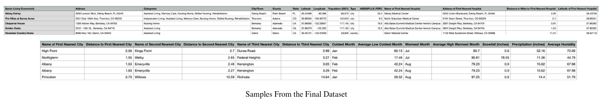
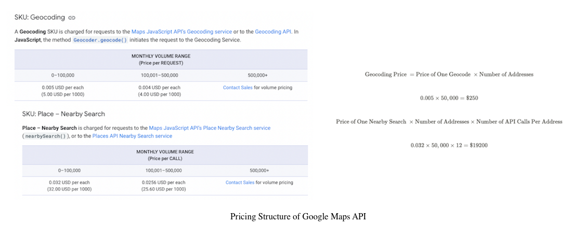
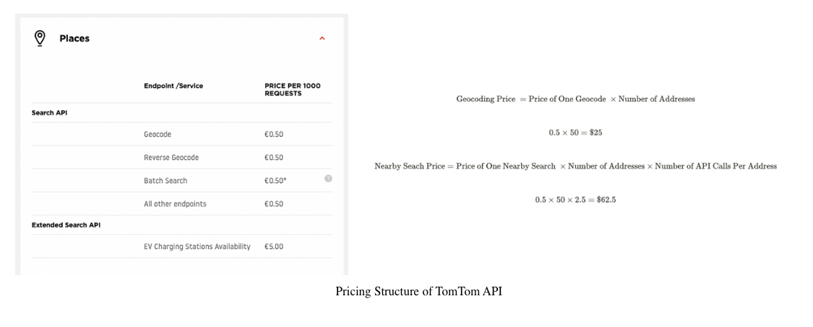

OPTIMIZING API EXTRACTION TO PROCURE A LARGE DATASET
AN EXTENSIVE DATA COLLECTION PROJECT TO DETAIL THE NEARBY POINTS OF INTEREST, NEARBY CITIES, WEATHER, CENSUS, AND GEOGRAPHY OF OVER 50,000 ADDRESSES
Introduction
Whether it be by integration of data-driven applications with a third party or simply scraping a static dataset, a knowledge and understanding of API usage is a invaluable skillset for anyone who wants to work with data. In this freelance project I was tasked with creating a database for a list of 50,000 senior living facilities. Given only the addresses of each facility, I had to procure data including in the following categories:
- Geographical Information - TomTom API: Name of Village/Town/City/County/State in which the facility is based, Longitude/Latitude (Known as Geocoding))
- Nearby Cities: - GeoDB API: 3 of the Nearest Towns/Cities and their locations
- Census Data - CSV files from Census.gov: Population of the Town/City the facility is based, Population of the City over 65
- Nearby Points of Interest (POI) - TomTom API: For each address, finding a list of nearest points of interests as well as the distance from each one. These included 2 Nearest Hospitals, 4 Nearest Restaurants, 4 Nearest Pharmacy, Nearest Hairdresser, 2 Nearest Churches and more...
- Weather Data - Weather Crossing API: Coldest and warmest months and their corresponding temperature averages, Precipitation, Snowfall, Humidity etc...
The final dataset would contain 174 columns and thus had over 8.7 million observations! Procurement involved using 3 API's (listed above) as well as data from census.gov which came in the form of CSV files. Due to the length of this project I will be mainly highlighting key challenges and takeaways, with some code snippets!
Takeaway: Basic API Usage
The basic usage of an API can be quite simple and uniform across different services. Below is the code used for geocoding (finding the longitude and latitude of a location). The basic elements of this URL request (and many others) are
- Endpoint: defines which API from the service you are querying
- Query: The specific search that the user wants to execute, in this case an address
- Parameters: Other parameters defined by the API documentation. This will very likely include the API Key itself.
Challenge One: Check and Estimate Your Costs! (ft. Google Maps API)
 Google Maps may be the best mapping API out there but simple cost analysis showed that I'd have to be high off my mind to consider using their service. I am not sure how companies can afford them but I guess they may have some mutually beneficial contract.
Thankfully, alternatives are out there, out of which I selected the TomTom API. Their documentation was concise, and the fact that they have clients like Volkswage, Apple and Microsoft is a testament to their reliability. Most importantly they were affordable! With the total cost of extraction estimated at less than $100 (seecomparison figures above) ... WHAT A DIFFERENCE!
Challege Two: API's may not always have your desired functionality
This is best illustrated by the major problem I ran into whilst running TomTom's Nearby Search. The API was set up in such a way that if I searched for multiple categories i.e. hospital and supermarket, it would return a maximum of 100 results from BOTH categories, ordered by distance.
The problem with this was that if the nearest hospital was 10 miles away, yet there are more than 100 supermarkets closer than 10 miles, the API would not be able to retrieve what would have been the nearest hospital. This caused a lot of empty (NA values in the initial data). Especially for areas that were more population dense.
My resolution to this problem is presented in the folllowing code block.
- Start with a list of all the required POI category codes.
- Write a while loop to keep making requests and store the data which has been extracted in all_results array
- Once the required number of a certain category is found (eg. 4 restuarants), delete it from the list, it will not be in the next request
- Repeat until we have reached the end of the query i.e. less than 100 results, or have made more than 5 requests. Return the large list of results for detailed extraction
def get_all_results(lat, lng, id_to_categories, req_two, req_four, radius=50000, offset=0):
"""
Make as many requests as needed, check which ids are ticked off, append it to the results list
"""
# Copy the id_to_categories to avoid confusion
id_list = list(id_to_categories.keys())
# Add one more for each id that we need two entries of
id_list_extended = []
for id_ in id_list:
if id_to_categories[id_] in req_two:
id_list_extended.append(id_)
elif id_to_categories[id_] in req_four:
id_list_extended.extend([id_] * 3)
id_list += id_list_extended
# Store all results
all_results = []
# Flag to keep running the while loop, i.e. keep extracting results
keep_running = True
# Track how many requests are being made
num_requests = 0
while keep_running:
# Increment the number of requests that were made
num_requests += 1
# Generate the category set
category_set = generate_category_set(list(set(id_list)))
# Create the request
URL = create_request(lat, lng, category_set)
# Extract the results and add them to all results first
nearby_results = requests.get(URL)
nearby_results = nearby_results.json()
all_results.extend(nearby_results['results'])
# See which ids were found, knock them off the list if so
found = []
for result in nearby_results['results']:
found.append(result['poi']['categorySet'][0]['id'])
# Convert to counter objects so we can remove the exact number
found_counter = Counter(found)
id_list_counter = Counter(id_list)
diff = id_list_counter - found_counter
id_list = list(diff.elements())
# Two conditions to terminate the loop: 1. id_list is empty, 2. No more results to retrieve
if (not id_list) or (nearby_results['summary']['numResults'] < 100) or (num_requests>5):
keep_running = False
return all_results, num_requests
Challege Three: A Lot of Data Cleaning!
Building a seamless data pipeline requires a lot of data cleaning and transformation, especially when collecting data from different sources. For example, one of my tasks joining a table detailing the population percentage over 65 from
census.gov into the main database.
 For example, one of the many problems identified was that there were different naming conventions for individual cities. This caused an error in the left_join producing N/A values.
Although these problems can be remedied by a single line of code (see below), it is often spotting these issues that can be a real problem, which requires intuition and granular investigation.
For example, one of the many problems identified was that there were different naming conventions for individual cities. This caused an error in the left_join producing N/A values.
Although these problems can be remedied by a single line of code (see below), it is often spotting these issues that can be a real problem, which requires intuition and granular investigation.
df['City'] = data['City'].str.replace("St.", "Saint")
Challenge Four: API's requests can be very slow. This is because
Requests can be very slow! Total extraction time for all columns took about 15 hours total. Luckily I could run these overnight and I only had to extract once. The long duration is due to the synchronous nature of the requests library which must create a new session with the client server, make a request, wait for its response and close the session before starting it all over again.
A faster way would be to implement requests asynchronously through asyncio and aiohttp. These enable the user to make a request and "await" responses as they arrive, meanwhile, the program can send more requests allowing a much more efficient data collection as no time is spent waiting for a response before the next request is sent.

I had implemented these libraries before, but it did not work in this instance possibly due to request limits. Maybe solving this issue for mainstream APIs will be the subject of a future post!